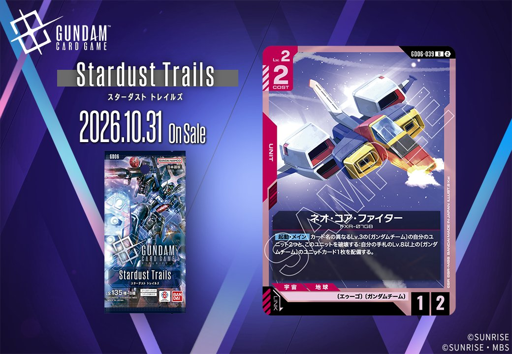
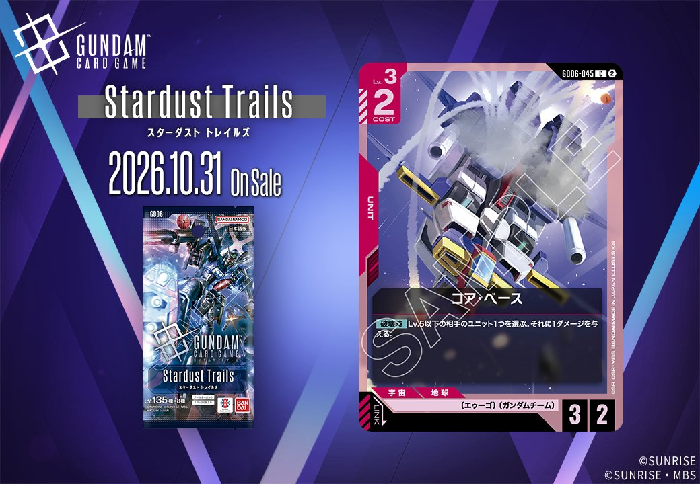
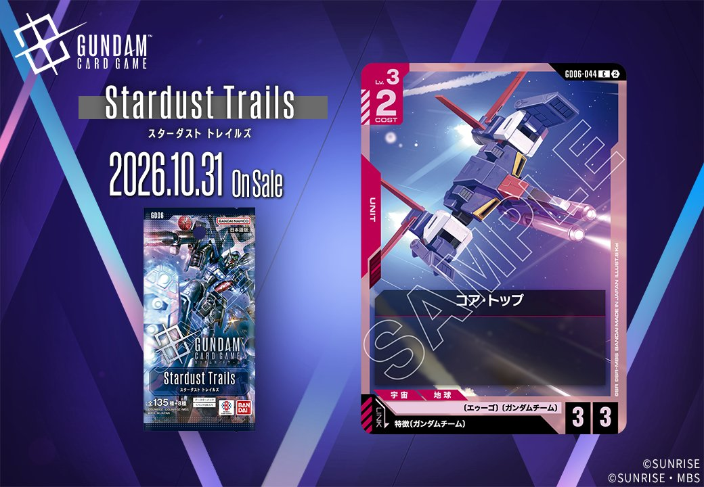
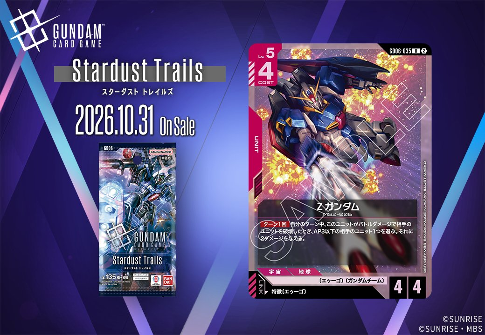
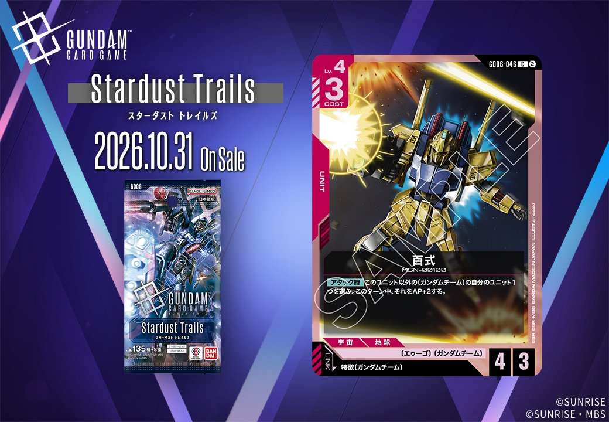
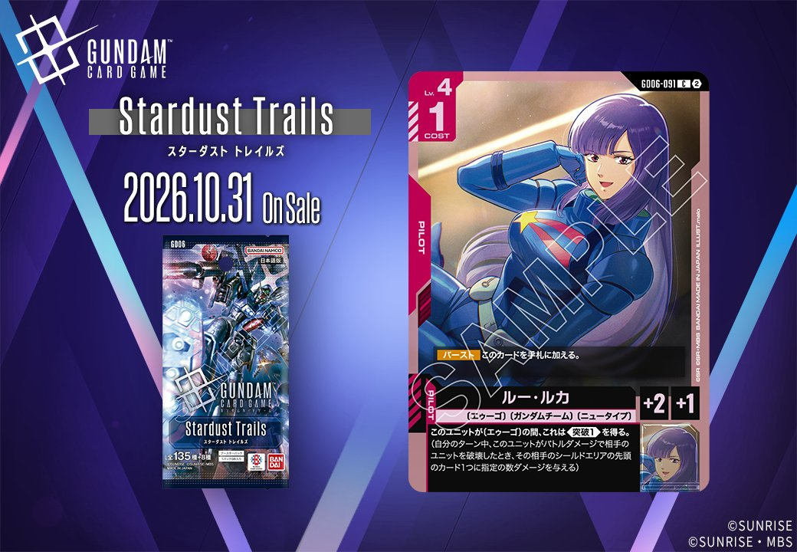
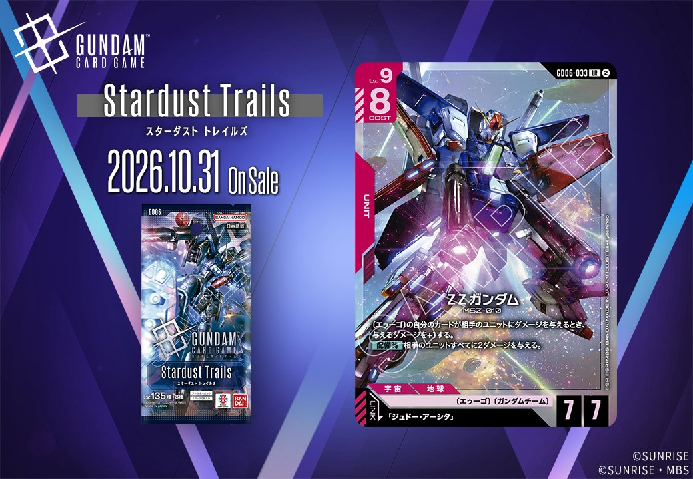
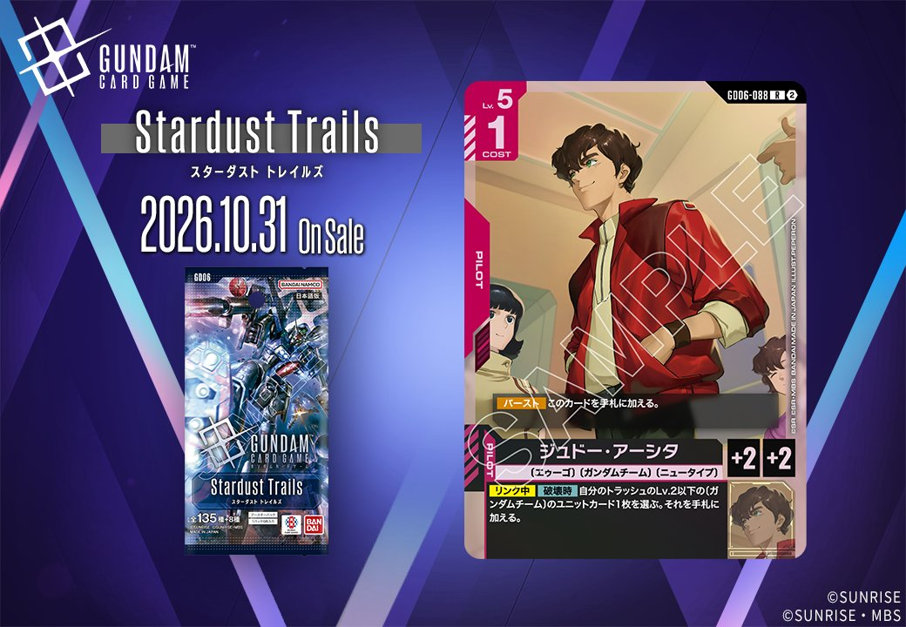
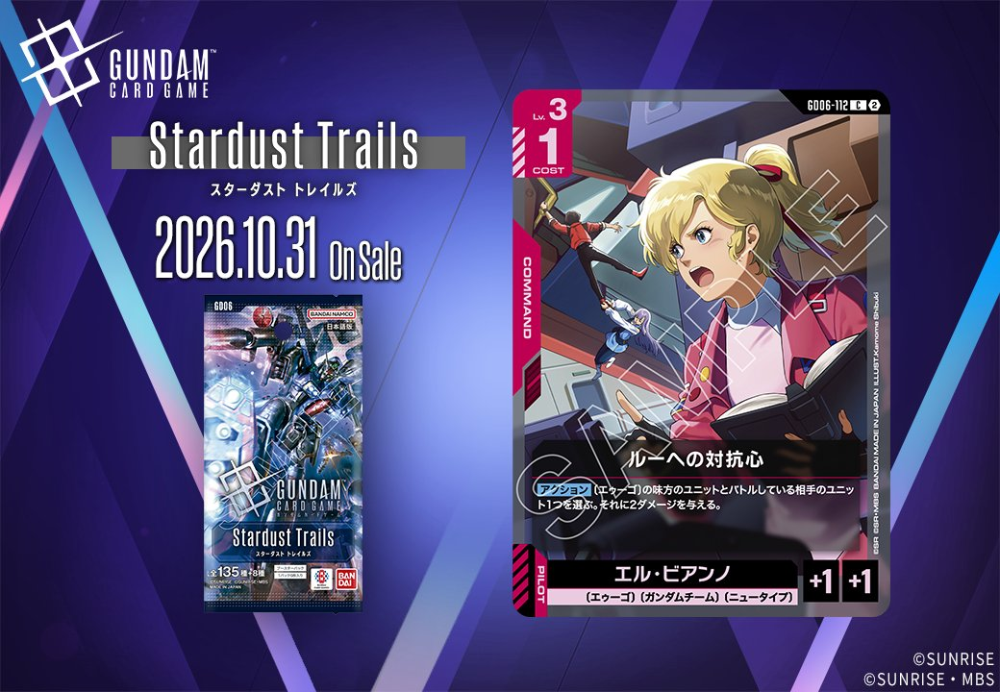

GD06から、赤のUNIT 3枚を紹介します。ネオ・コア・ファイター（GD06-039）、コア・トップ（GD06-044）、コア・ベース（GD06-045）の3枚で、発売日は2026年10月31日です。このうちリンク条件を持つのはコア・トップだけで、特徴にガンダムチームを持つパイロットを指定するUNITとなっています。

ネオ・コア・ファイター (GD06-039)
| 色 | 赤 | タイプ | UNIT |
| Lv | 2 | コスト | 2 |
| AP | 1 | HP | 2 |
| 特徴 | 〔エゥーゴ〕、〔ガンダムチーム〕 | ||
効果: 【起動・メイン】カード名の異なるLv.3の〔ガンダムチーム〕の自分のユニット2つと、このユニットを破壊する:自分の手札のLv.8以上の〔ガンダムチーム〕のユニットカード1枚を配備する。
ネオ・コア・ファイターはLv.2、コスト2、AP1/HP2の赤のユニットで、リンクは設定されていません。役割は【起動・メイン】に集約されています。カード名の異なるLv.3の〔ガンダムチーム〕のユニット2つと自身を破壊し、手札のLv.8以上の〔ガンダムチーム〕のユニットカードを配備できます。場のユニットを3つ失うため、手札に対象を確保したうえで大型ユニットへつなぐ一手になるでしょう。ジュドー・アーシタの【リンク中】【破壊時】はトラッシュのLv.2以下の〔ガンダムチーム〕のユニットカードを手札に加える効果で、このカードもその対象に含まれます。

コア・ベース (GD06-045)
| 色 | 赤 | タイプ | UNIT |
| Lv | 3 | コスト | 2 |
| AP | 3 | HP | 2 |
| 特徴 | 〔エゥーゴ〕、〔ガンダムチーム〕 | ||
効果: 【破壊時】Lv.5以下の相手のユニット1つを選ぶ。それに1ダメージを与える。
コア・ベースは、Lv.3・コスト2でAP3/HP2の赤のユニットです。リンク条件は設定されていません。【破壊時】にLv.5以下の相手のユニット1つへ1ダメージを与えるため、バトルで破壊されても損をしにくくなります。HP2は倒されやすい数値ですが、その弱点がそのまま効果の起点になります。〔エゥーゴ〕を持つので、ΖΖガンダムが場にいれば与えるダメージが+1され、HP2の相手ユニットも処理できるようになるでしょう。〔ガンダムチーム〕でもあるため、百式の【アタック時】でAP+2を受ける対象にもなれます。なお、Lv.3なのでジュドー・アーシタの回収対象には含まれません。

コア・トップ (GD06-044)
| 色 | 赤 | タイプ | UNIT |
| Lv | 3 | コスト | 2 |
| AP | 3 | HP | 3 |
| 特徴 | 〔エゥーゴ〕、〔ガンダムチーム〕 | ||
| リンク条件 | 特徴にガンダムチームを持つPILOT | ||
コア・トップはLv.3・コスト2、AP3/HP3の効果なし(バニラ)のユニットです。評価の軸はコスト2で3/3というステータスで、特徴〔エゥーゴ〕〔ガンダムチーム〕を持つ点が関連カードとの接点になります。百式の【アタック時】で選べる〔ガンダムチーム〕のユニットに含まれるため、AP+2を受ければAP5で攻撃できるでしょう。ΖΖガンダムが場にいれば、〔エゥーゴ〕のカードである本機が相手ユニットに与えるダメージも+1されます。リンク条件は特徴にガンダムチームを持つパイロットで、ルー・ルカを乗せれば、本機が〔エゥーゴ〕なので《突破(1)》が付きます。一方、ジュドー・アーシタの【破壊時】で回収できるのはLv.2以下のユニットカードのため、Lv.3の本機は対象になりません。
関連カード
-

Ζガンダム(GD06-035)NEW赤系 — 同色・共通特徴: エゥーゴ、ガンダムチーム（新カード） -

百式(GD06-046)NEW赤系 — 同色・共通特徴: エゥーゴ、ガンダムチーム（新カード） -

ルー・ルカ(GD06-091)NEW赤系 — 同色・共通特徴: エゥーゴ、ガンダムチーム（新カード） -

ΖΖガンダム(GD06-033)NEW赤系 — 同色・共通特徴: エゥーゴ、ガンダムチーム（新カード） -

ジュドー・アーシタ(GD06-088)NEW赤系 — 同色・共通特徴: エゥーゴ、ガンダムチーム（新カード） -

ルーへの対抗心(GD06-112)NEW赤系 — リンク対象（ガンダムチーム PILOT）（新カード）